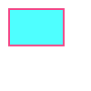
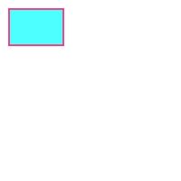
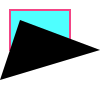
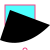
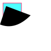
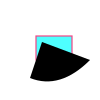
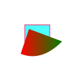
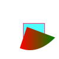

SVG-Beispiele
SVG-Dateien

1: 100x100 SVG-Img mit <rect>

2: 200x200 SVG-Img gleichen Inhalts

3: Path hinzugefügt mit drei Punkten

4: Eine Linie ist mit Q (quadratic curve) gekrümmt

5: Beide Elemente gruppiert, und die Gruppe skaliert

6: ... und translated

7: Eine Definition mit einem Gradient

8: Eine Definition mit einem "Shadow"-Filter
9: Ein aufwändigerer Path (traced mit Inkcacpe)
Inline-SVG
Button